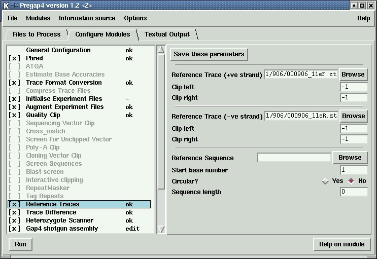

It is not clear which is the best way of organising the data for the simplest and most efficient processing using the current programs, but for now we make the following suggestions.
We assume that the region of the DNA being studied has a standard set of forward and reverse primer pairs covering all segments of interest and that a standard reference sequence in EMBL format is available.
We recommend that batches of data from single primer pair combinations are processed separately, using separate temporary gap4 databases. For example, exon 11 of BRCA1 can be covered by five pairs of forward and reverse primers and we suggest that batches of traces obtained from each of these primer pairs should be processed using five gap4 databases.
Each processing run should create a new database and should enter, not only the new sets of patient data for that particular primer pair, but also the corresponding reference sequence and reference traces.
Obviously when several primer pairs are needed to cover a given region of the DNA (eg for BRCA1) the same reference sequence would be used for all the primer pairs.
An alternative to the above is to create a template database for each primer pair which contains the data for the corresponding forward and reverse reference traces plus the fully annotated reference sequence. These template databases are copied to create a temporary database for each new batch of data for the given primer pair.
Whichever of these two strategies is adopted each batch of new data is processed, analysed and assembled into these temporary databases, inspected visually, and a mutation report generated.
The use of separate temporary databases simplifies the assignment of reference traces and the use of the report generation function.
Figure 9. An overview of a database containing data for only one primer pair of BRCA1
For long term storage and to facilitate larger studies, the content of each
of these temporary databases is then transferred to archive databases, after
which the temporary databases are no longer needed.
The archive databases could be restricted to individual primer pairs
or could accommodate data covering the whole of the reference sequence.
All the data processing other than visual inspection of traces and report
generation is handled by the program pregap4
(see section Pregap4 introduction).
Pregap4 achieves this by
running a set of individual programs selected by the user.

Figure 10. The pregap4 Configure Modules window showing a typical list of mutation data option selections.
The "Configure Modules" window shown in Figure 10.
is used to select which programs
to apply to a batch of data, and to configure their usage. On the left is a list
of programs and options, with "x" showing the ones that have been selected.
If the user clicks on an option name its name is given a blue background and
its configurable parameters are shown in the right hand panel to enable the
user to alter them. Here "Reference Traces" has been selected which
enables the user to set the reference traces and sequence.
The other selected options (marked with "x") are typical of the ones used for
mutation detection studies. Below we describe the use of each plus a few
alternatives. All of the options are descibed in more detail elsewhere in
our documentation, our intention here is to give an overview of their use
during mutation studies.
Note that the window labelled "Files to Process" is used to
tell the program which files to process as a batch.
Note that pregap4 has the facility to save its configuration and parameter
settings.
This means that the current configuration will be set automatically next
time the program is used (and hence the steps just described only need to be
performed once). In addition pregap4 can be run non-interactively
by typing a single line on the command line.
Taking thse two capabilities together, means that only one line need be
typed in order to process all subsequent batches of data (assuming the
file names are reused, which is easy to arrange.)
![[picture]](mut_template_reads_single,6in.png.html)
(Click for full size image)
Processing Batches Of Mutation Data Trace Files Using Pregap4
Configuration Of Pregap4 For Mutation Data
Last generated on 25 April 2016.